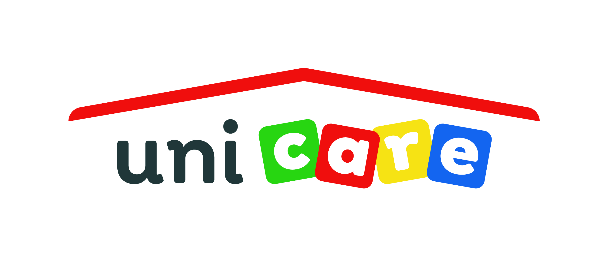

+++
title = "Materská škola UniCare - Pedagogický/á asistent/ka v materskej škole"
slug = "84"
+++

<div class="container mb-5">
    <div class="row justify-content-around">
        <div class="col-6 col-md-2 mt-3">
        </div>
        <div class="col-md-8">
            <h1>Materská škola UniCare</h1>
          <h2>Pedagogický/á asistent/ka v materskej škole</h2>

            <p>
                <strong>Miesto: </strong>Materská škola UniCare, Polereckého 3, Bratislava<br/>
                <strong>Forma: </strong>TPP (polovičný, skrátený úväzok)<br/>
                <strong>Flexi faktor: </strong> skrátený úväzok min. 10 hod. týždenne<br/>
                <strong>Plat: </strong>Plat zamestnanca bude zohľadňovať zákon 553/2003 Z. z. a Nariadenie vlády 
              Slovenskej republiky č. 220/2022 Z. z., ktorými 
              sa ustanovujú zvýšené stupnice platových taríf zamestnancov pri výkone práce vo verejnom záujme.
<br/>
                <strong>Očakávaný nástup: </strong>4.9.2023<br/>
                <strong>Dátum pridania ponuky: </strong>15.8.2023<br/>
            </p>
            <h2>O firme </h2>
            <p>materská škola v sieti ministerstva školstva pre deti 2-6 r.</p>
    
          <h2>Náplň práce</h2>
         <p>Všetky informácie o práci pedagogického asistenta sa dozviete  <a href="https://inklucentrum.sk/wp-content/uploads/2021/06/Buletin_Ped-Asistent.pdf" target="_blank">v tejto príručke.</a> </p>

           <h2>Požiadavky</h2>
         
      <ul>
        <li>min. maturita,</li>
        <li>bezúhonnosť, </li>
        <li>zdravotná spôsobilosť, </li>
        <li>komunikatívnosť, </li>
        <li>trpezlivosť, </li>
        <li>tvorivosť, </li>
        <li>flexibilita, </li>
        <li>organizačné schopnosti, </li>
        <li>samostatnosť, </li>
        <li>spoľahlivosť, </li>
        <li>dôslednosť, </li>
        <li>precíznosť, </li>
        <li>ústretovosť .</li>
      </ul>
        
             <h2>Doplňujúce info</h2>     
        <p>Ponúkame za zvýhodnených podmienok miesto v MŠ UniCare, príp. jasliach UniCare, Kontinuálne
          interné/externé vzdelávanie, prácu vo výbornom kolektíve angažovaných ľudí pre prácu s deťmi.
          </p>


            <h2>Ďalší postup</h2>
<p>V prípade záujmu zašlite svoje CV (životopis) a motivačný list s dôrazom na Vaše prednosti, limity a 
  predovšetkým očakávania od vzájomnej spolupráce, spolu so súhlasom so spracovaním osobných 
  údajov na <a href="mailto:unicare@unicare.sk">unicare@unicare.sk</a>. V prípade ďalších otázok nás môžete kontaktovať.
 </p>

        </div>
        <div class="col-md-2"></div>
    </div>
    <div class="row">
        <div class="col offset-md-2 mt-5">{{< back >}}</div>
    </div>
</div>
